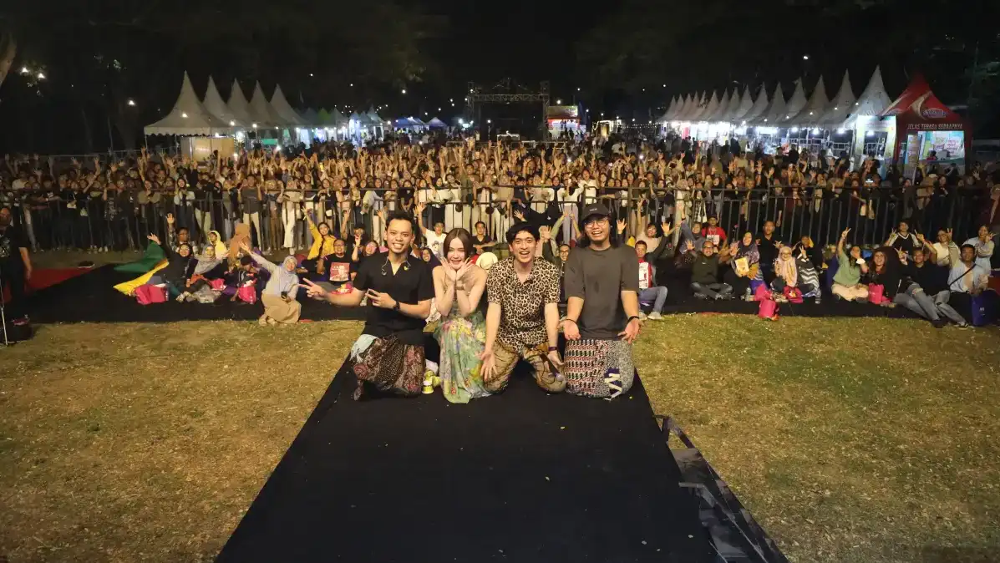
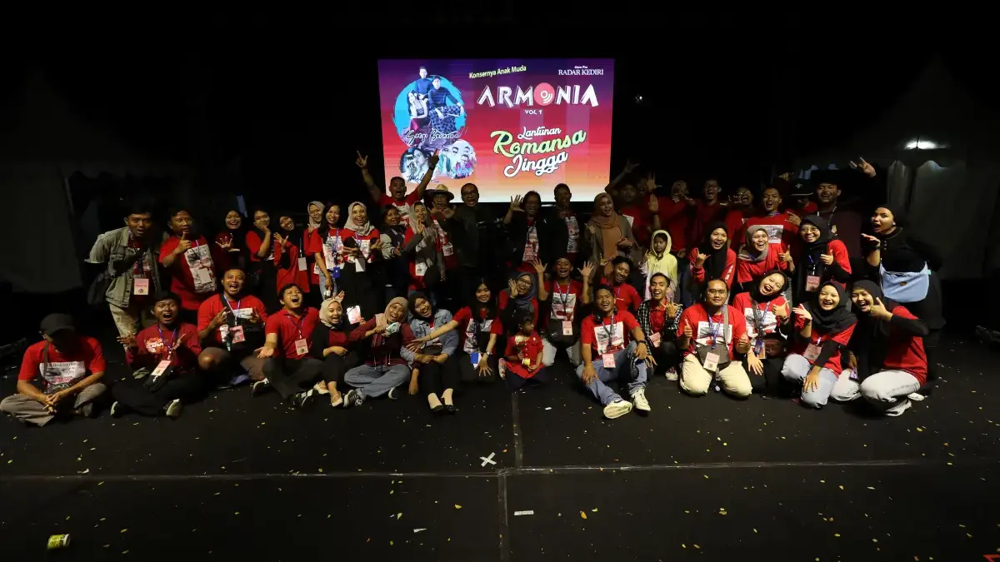
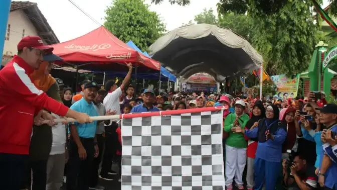
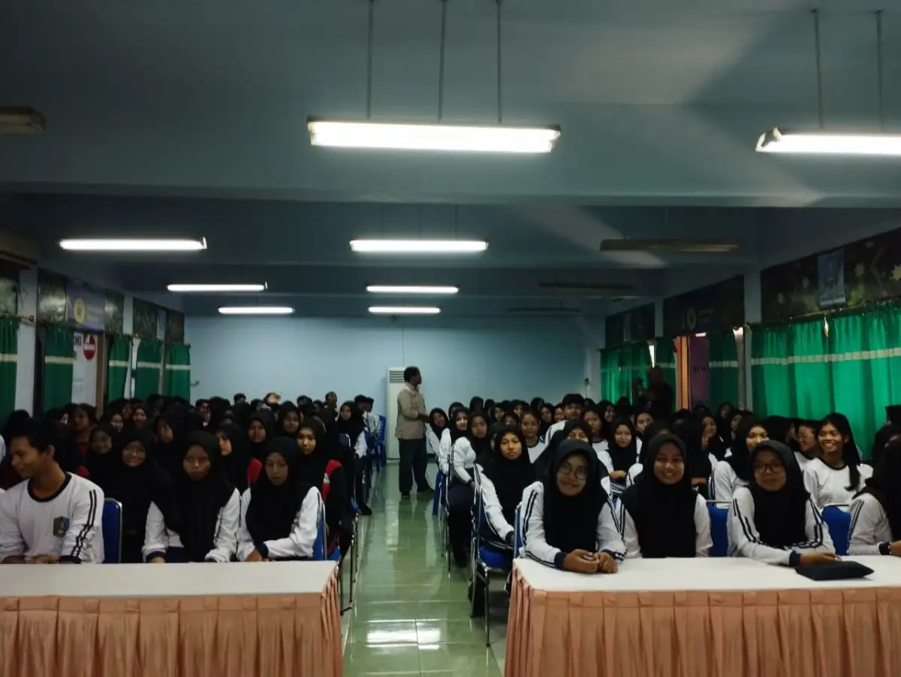
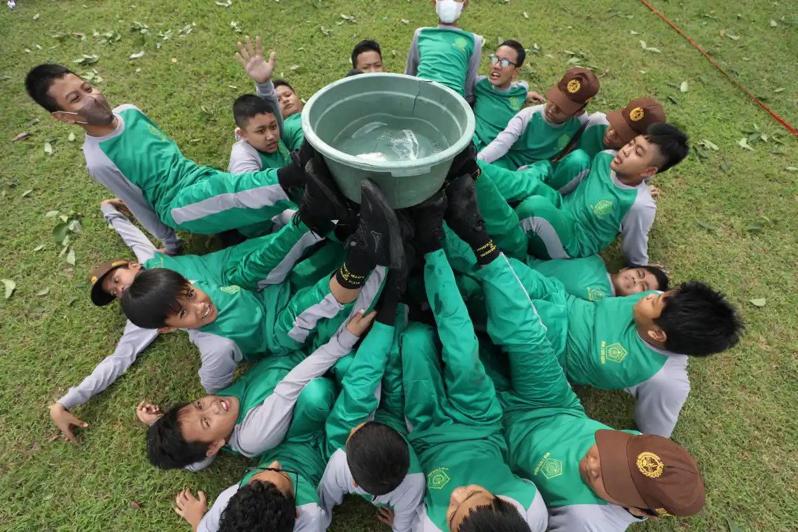

Event Organizer Profesional
Solusi penyelenggaraan acara terpadu untuk sekolah, pemerintahan, dan perusahaan di Kediri Raya. Dari Dies Natalis, LDKS Camp, Outbound, Pemilu OSIS, hingga gathering korporasi — semua dikerjakan tim profesional dengan publikasi eksklusif di Jawa Pos Radar Kediri.

Wujudkan Acara Berkesan dengan Tim EO Profesional Berpengalaman
Radar Kediri Institute hadir sebagai mitra strategis penyelenggaraan acara institusi Anda. Didukung tim EO berpengalaman dari Kediri Event dan jaringan publikasi Jawa Pos Radar Kediri, setiap acara tidak hanya berjalan lancar — tetapi juga meningkatkan reputasi dan citra positif institusi Anda di mata masyarakat luas.



Detail Layanan
- Kategori Event Organizer & Branding
- Klien Sekolah, Pemerintahan, Korporasi
- Jenis Acara Dies Natalis, LDKS, Outbound, OSIS
- Tim EO Profesional Kediri Event
- Narasumber Tokoh, Motivator, Pejabat Terkurasi
- Dokumentasi Foto & Video Profesional
- Publikasi Jawa Pos Radar Kediri
Tentang Layanan Ini
Layanan Event Organizer Radar Kediri Institute adalah solusi lengkap penyelenggaraan acara institusi yang tidak sekadar soal teknis kepanitiaan. Kami mengintegrasikan konsep acara yang matang, tim pelaksana profesional, dan strategi publikasi di Jawa Pos Radar Kediri — sehingga setiap acara yang Anda selenggarakan menjadi momen berkesan sekaligus investasi branding jangka panjang bagi institusi.
Melalui jaringan Kediri Event dan Jawa Pos Radar Kediri, kami memiliki akses ke sumber daya terbaik: dari narasumber berkaliber (kepala daerah, pimpinan instansi, pengusaha sukses), hingga tim dokumentasi foto dan video profesional. Anggaran penyelenggaraan pun lebih akuntabel karena kami adalah mitra resmi berbadan hukum dan terverifikasi Dewan Pers.
Jenis Acara yang Kami Kelola
Dies Natalis & Milad Sekolah
Penyelenggaraan perayaan hari jadi sekolah atau madrasah yang meriah dan berkesan. Meliputi konsep acara, MC profesional, hiburan, pameran prestasi, dan publikasi penuh di media cetak & digital Jawa Pos Radar Kediri.
LDKS Camp
Program Latihan Dasar Kepemimpinan Siswa yang dipadukan dengan pelatihan jurnalistik, fotografi, dan aktivitas outdoor yang menantang. Membentuk karakter pemimpin berintegritas dan percaya diri sejak dini.
Outbound & Team Building
Rangkaian aktivitas luar ruangan yang seru dan edukatif untuk membangun kerja sama, kepemimpinan, dan keterampilan sosial. Cocok untuk siswa, guru, karyawan, maupun manajemen perusahaan.
Pemilu OSIS & Demokrasi Pelajar
Program kegiatan demokrasi pelajar melalui publikasi pemilihan ketua OSIS secara lebih luas di media massa. Membangun citra sekolah sebagai satuan pendidikan yang mewujudkan kehidupan berdemokrasi.
Acara Pemerintahan & Korporasi
Penyelenggaraan seminar, pelantikan, gathering, rapat kerja, dan acara seremonial untuk instansi pemerintah maupun perusahaan swasta. Didukung tim profesional dan publikasi di media massa terpercaya.
Dokumentasi Kegiatan
Rekam jejak penyelenggaraan acara bersama institusi pendidikan, pemerintahan, dan perusahaan di Kediri Raya
